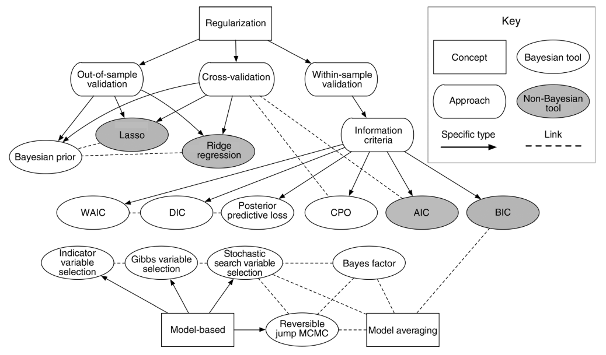
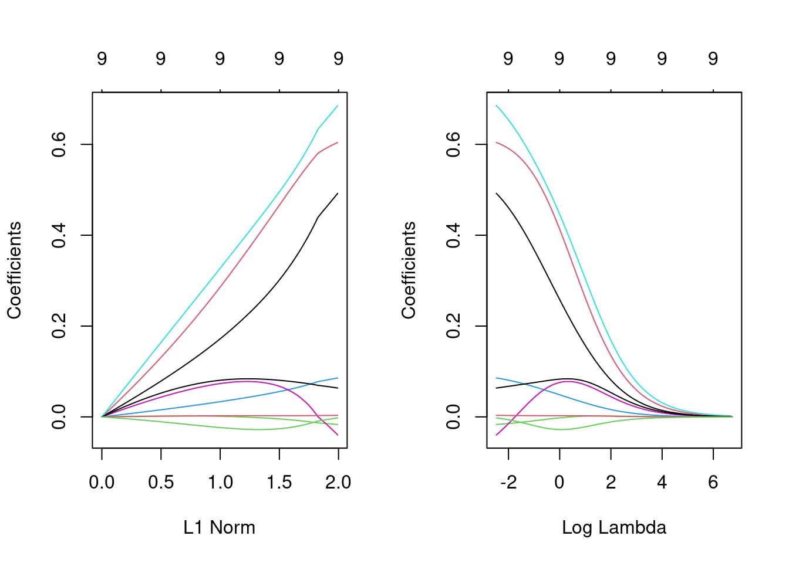
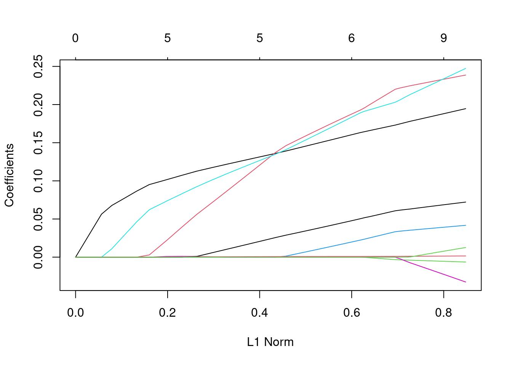

library(glmnet)Day 24 - 10/16/2024
Model selection
Recall Figure 2 in Hooten et al. (2015).

- \(AIC = 2p - 2\log(\hat{L})\)
- \(BIC = \log (n) \cdot p - 2\log(\hat{L})\)
- \(R_{adj} = R^2 - (1 - R^2) \frac{p-1}{n-p}\)
- Cross validation (k-fold, leave-one-out)
- \(RMSE = \sqrt{\frac{1}{n}\sum_{i=1}^{n}(y_i - \hat{y_i})}\)
- FYI. Consider that \(MSE(\hat\theta) = Bias(\hat{\theta}, \theta) + Var(\hat{\theta})\) whenever you are evaluating models.
Model-based model selection
- These methods are sometimes a useful alternative for scenarios where the predictors present collinearity.
- regularization, shrinkage, penalization.
Refresh: Ordinary Least Squares Regression
\[\hat{\beta}_{OLS}=(\mathbf{X}^\top\mathbf{X})^{-1}\mathbf{X}^\top\mathbf{y}\]
Ridge Regression
- Minimize the function \(\underset{\beta}{\text{argmin}} = (\mathbf{y}-\mathbf{X}\beta)^\top(\mathbf{y}-\mathbf{X}\beta)+\lambda(\beta^\top \beta - c)\).
- \(\hat{\beta}_{\text{Ridge}}=(\mathbf{X}^\top\mathbf{X}+\lambda\mathbf{I})^{-1}\mathbf{X}^\top\mathbf{y}\).
- \(\hat{\beta}_{\text{Ridge}}\) for \(\lambda = 0\).
- As the ridge parameter \(\lambda\) increases, the estimates can become close to zero.
- Useful for cases with collinearity, unstable \(\hat{\beta}_{OLS}\).
- Pick the smallest value of \(\lambda\) that produces stable estimates of \(\beta\).
- There are also automatic selections of \(lambda\).
This data example was used in Zou and Hastie (2005) and is available for easy download here.
dd <- read.csv("data/prostate.csv")
names(dd) [1] "lcavol" "lweight" "age" "lbph" "svi" "lcp" "gleason"
[8] "pgg45" "lpsa" "train" y <- dd$lpsa # log prostate-specific antigen
X <- model.matrix(lpsa ~ ., dd)[, -1]m_ridge <- glmnet(X, y, family = c("gaussian"), alpha = 0)
par(mfrow = c(1, 2))
plot(m_ridge)
plot(m_ridge, xvar = "lambda", label = TRUE)
Lasso Regression
- Lasso = Least absolute shrinkage and selection operator
- Minimize the function \(\underset{\beta_0, \beta }{\text{argmin}} = \left\{ \sum_{i=1}^{N}(y_i - \beta_0 - x_i^T \beta)^2 \right\} \text{subject to} \sum_{j=1}^{p}|\beta_j| \leq t\).
- \(\hat{\beta}\) does not have a closed form solution.
- As penalization increases, the \(\beta\) estimates can become zero.
- Not great for cases with collinearity. Elastic net is a better alternative.
- Problems with high-dimensional data (e.g., genetics data). Elastic net is a better alternative.
fit_lasso <- glmnet(X, y, family = c("gaussian"), alpha = 1)
par(mfrow = c(1, 2))
plot(fit_lasso)
plot(fit_lasso, xvar = "lambda", label = TRUE)
Elastic Net Regression
- Combines the L1 (Lasso) and L2 (Ridge) regularization penalties.
- \(\hat{\beta} \equiv \underset{\beta}{\text{argmin}}(||y-\mathbf{X}\beta||^2 +\lambda_2||\beta||^2) +\lambda_1||\beta||_1\), where \(||\beta||_1 = \sum_{j=1}^{p}|\beta_j|\).
- Ridge and Lasso are special cases of Elastic Net.
fit_elasticnet <- glmnet(X, y, family = c("gaussian"), alpha = .5)
par(mfrow = c(1, 2))
plot(fit_elasticnet)
plot(fit_elasticnet, xvar = "lambda", label = TRUE)
Other shrinkage examples
For next class
- We’ll focus on a project example (including post-hoc mean comparisons).